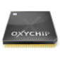

Zydas ZD1211
Archivierte Anleitung
Dieser Artikel wurde archiviert, da er - oder Teile daraus - nur noch unter einer älteren Ubuntu-Version nutzbar ist. Diese Anleitung wird vom Wiki-Team weder auf Richtigkeit überprüft noch anderweitig gepflegt. Zusätzlich wurde der Artikel für weitere Änderungen gesperrt.
Zum Verständnis dieses Artikels sind folgende Seiten hilfreich:

Die Firma Zydas ist mittlerweile von Atheros aufgekauft worden. Atheros vertreibt und entwickelt den zd1211b aber unter dem Namen AR5007UG. Dieser Chipsatz wird vom Treiber zd1211rw unterstützt.
Ab Ubuntu 7.10 Gutsy Gibbon sind die Treiber im Kernel integriert. Die notwendigen Firmwaredateien sind im Paket linux-ubuntu-modules der verwendeten Kernelversion enthalten. Es sind in letzter Zeit mehrfach neuere Chipsatzrevisionen aufgetaucht, die leider nicht direkt unterstützt werden. Dies macht unter Umständen eine Installation des aktuellen Treibers erforderlich.
Firmwaredateien installieren¶
Damit die Hardware funktioniert, ist das Paket mit den notwendigen Firmwaredateien erforderlich [1]. Ab Ubuntu 7.10 ist folgendes Paket zu installieren:
linux-ubuntu-modules-Kernelversion [5]
Ist keine direkte Internetverbindung vorhanden, können die benötigten .deb-Programmpakete auch aus den offiziellen Paketquellen  heruntergeladen werden. Siehe dazu auch Paketinstallation DEB.
heruntergeladen werden. Siehe dazu auch Paketinstallation DEB.
Ab Ubuntu 8.10 gibt es ein Installationspaket [1] mit den aktuellen Firmwaredateien.
linux-firmware
Alternativ - und für alle anderen Ubuntu-Versionen - kann das Paket mit den erforderlichen Firmwaredateien hier  heruntergeladen werden. Eine Installationsanleitung ist in der Datei README der gepackten Archivdatei enthalten.
heruntergeladen werden. Eine Installationsanleitung ist in der Datei README der gepackten Archivdatei enthalten.
aktueller Treiber¶
Auch für den Zydas zd1211-Chipsatz sind aktuelle Treiber verfügbar. Der Treiber kann ab Kernelversion 2.6.24-* bzw. Ubuntu 8.04 in das System eingebunden werden. Siehe dazu den Wiki-Artikel Linux Wireless.
Vendor Driver¶
Der Originaltreiber von Zydas wurde vom Hersteller entwickelt. Es existiert noch ein alternatives Treiberprojekt der Community auf Basis der Herstellerspezifikationen.
Hinweis:
Beide Treiber werden nicht empfohlen.
Normalerweise sollte eine WLAN-Karte mit zd1211-Chipsatz sofort erkannt werden, da der Treiber bereits im Kernel enthalten ist. Die WLAN-Karte Fiberline WL 430 U verwendet z.B. aber einen etwas abgewandelten Chipsatz, den zd1211b. Ab Ubuntu 7.04 ist für den zd1211b ein passendes Kernelmodul vorhanden, und WLAN USB-Sticks wie z.B. der Belkin-G Typ F5D7050de werden direkt vom System unterstützt.
Treiber übersetzen¶
Um die Module kompilieren zu können, sind zuerst diese Pakete zu installieren [1]:
build-essential
linux-kernel-headers
Danach lädt man das Treiberpaket herunter und entpackt es [7]. Das Makefile muss angepasst werden, damit das zd1211b und nicht zd1211 erzeugt wird. In einem Editor mit Root-Rechten [4] öffnet man das Makefile und ersetzt in Zeile 21 die 0 durch eine 1:
# set to 1 for zd1211b ZD1211REV_B=1
Danach kann das Modul kompiliert, installiert und geladen werden [3]:
make sudo make install sudo depmod -a sudo modprobe zd1211b
Bei Erfolg sollte die LED am Stick aufleuchten und eine Netzwerkschnittstelle wlan0 vorhanden sein.
- Erstellt mit Inyoka
-
 2004 – 2017 ubuntuusers.de • Einige Rechte vorbehalten
2004 – 2017 ubuntuusers.de • Einige Rechte vorbehalten
Lizenz • Kontakt • Datenschutz • Impressum • Serverstatus -
Serverhousing gespendet von